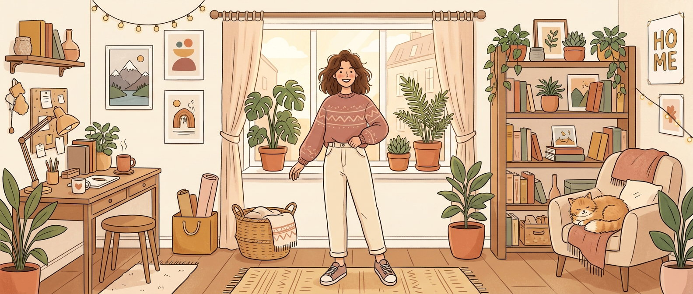
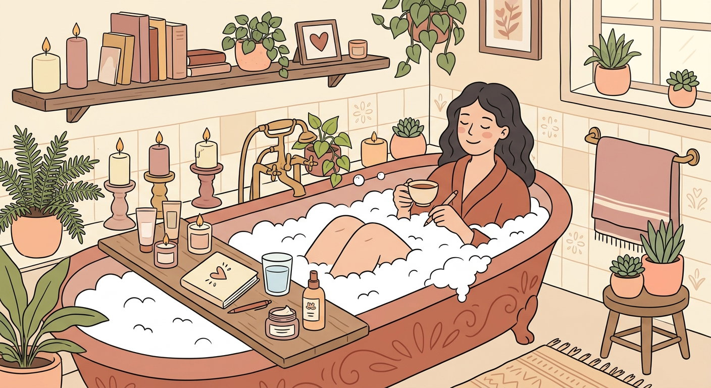

A warm little corner of the internet for people who live solo — and want to do it happily. Cook for one, keep your home safe, master your money, and treat yourself with the kindness you deserve.

Pick your mood and we'll surface the little stories and tips that fit you best today. No pressure, no judgement — just the right words at the right moment.
Living well alone is a skill — and like any skill, it gets easier and more joyful with practice. Here's where we focus.
Small-batch recipes, zero food waste, and meals that feel like a hug — even at a table for one.
Simple habits and gentle gear so your space always feels secure, calm, and entirely yours.
Budgeting on one income, building a safety cushion, and spending guilt-free on what you love.
Tiny rituals that refill your cup — because being your own best company is a beautiful thing.
Solitude is not the absence of company — it's the presence of yourself, fully and warmly.
— a little reminder from the Cozy Club
Tick them off as you go today. They're small on purpose — solo living is built one gentle, doable moment at a time. 🌼
One warm letter a week: a recipe for one, a money tip, a self-care prompt, and a little encouragement. No spam — just a friend in your inbox.